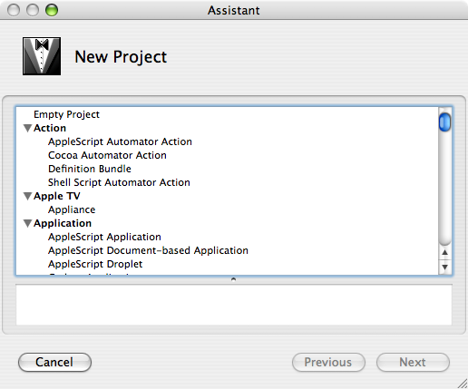

Using the BackRow Developers' Kit
The BDK includes a few different tools designed to assist you with your Apple TV development tasks. Most prominently it includes the test harness application, designed to enable you to debug your plugins in a near-complete simulation of the Apple TV software environment. It also includes the private header files necessary for development, and a project template for Xcode to help you get started.
Creating a Project |
|
|  |
Starting a new project is easy with the included Xcode project template, which includes everything you need to create your first Apple TV appliance plugin. |
Using the BackRow Test application as a Custom Executable for your Project |
|

|
The BackRow Test application is designed in such a way that you can set it up as a custom executable for your appliance plugin projects. With a few simple steps you can have the test harness application launch when you click 'Run' or 'Debug' in your Xcode project, showing your plugin in the BackRow window immediately. |
Developing Your First Appliance |
|

|
The included tutorial will walk you through the steps of creating your first appliance plugin, from creating the project to debugging using the test harness application. There are more tutorials available at my site, which include:
|